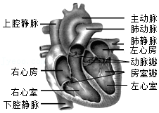

2020年北京市中考生物试题 原卷解析
2020年北京市中考生物试卷
参考答案与试题解析
一、选择题（共15小题，每小题1分，共15分。在每小题列出的四个选项中，选出符合题目要求的一项）
1．【分析】分析图解可知，图中A是洋葱表皮细胞，B是血细胞，C是植物的叶表皮细胞，D是植物的维管束细胞。解答即可。
【解答】解：A、洋葱表皮细胞属于植物细胞，有细胞壁，细胞膜，细胞质和细胞核等结构，A不符合题意；
B、血细胞属于动物细胞，无细胞壁，B符合题意；
C、叶表皮细胞，有细胞壁、细胞膜、细胞核、细胞质等结构，C不符合题意；
D、植物的维管束细胞，具有细胞壁，D不符合题意
故选：B。
【点评】掌握动植物细胞的结构特点是解题的关键。
2．【分析】酵母菌是单细胞的真菌，真菌的基本结构有细胞壁、细胞膜、细胞质、细胞核，没有叶绿体。真菌中的细胞不含叶绿体，营养方式是异养。它们从动物、植物的活体、死体和它们的排泄物，以及断枝、落叶和土壤腐殖质中、来吸收和分解其中的有机物，作为自己的营养，能进行孢子生殖。
【解答】解：A、酵母菌是单细胞真菌。A正确；
B、气体交换要通过细胞膜进行。B正确；
C、酵母菌在适宜的条件下能够进行出芽生殖。C正确；
D、没有叶绿体，营养方式是异养。D错误。
故选：D。
【点评】解答此题的关键是明确酵母菌的特点。
3．【分析】种子的萌发需要一定的条件，外界条件是适宜的温度、适量的水分、充足的空气；自身条件是完整而有活力的胚，以及供胚发育的营养物质。
【解答】解：A、种子萌发需要一定的水分，因此在容器中需要放入适量的水，A正确；
B、发豆芽需要适宜的温度，B正确；
C、绿豆的子叶有两片，是双子叶植物，营养物质储存在子叶中，因此为绿豆种子萌发提供营养的结构是子叶，C正确；
D、在种子萌发过程中，最先突破种皮的结构是胚根，发育成根，D错误。
故选：D。
【点评】明白种子萌发的条件及过程。
4．【分析】蒸腾作用是水分从活的植物体表面（主要是叶子）以水蒸气状态通过气孔散失到大气中的过程。蒸腾作用为大气提供大量的水蒸气，增加空气湿度，降雨量增多，调节气候，这是蒸腾作用在自然界中的作用；蒸腾作用散失大量的水分，吸收热量，使气温降低，降低植物体特别是叶片的温度，避免灼烧；蒸腾作用是根吸水的动力，促进了水和无机盐向上的运输，可见蒸腾作用对植物的生活具有重要的意义。
【解答】解：A、蒸腾作用是散失水分，与大气中氧气含量无关。A错误；
B、蒸腾作用为大气提供大量的水蒸气，增加空气湿度，调节气候。B正确；
C、蒸腾作用是根吸水的动力，促进了水和无机盐向上的运输。C正确；
D、蒸腾作用散失大量的水分，吸收热量，使气温降低，降低植物体特别是叶片的温度，避免灼烧。这是对植物自身的意义，D正确；
故选：A。
【点评】植物的蒸腾作用是中考的热点，要注意理解掌握，并能灵活运用相关知识来解决具体的问题。
5．【分析】呼吸作用指的是细胞内有机物在氧的参与下被分解成二氧化碳和水，同时释放能量的过程，一部分转化为热能。实质是：在氧气的参与下，分解有机物释放能量，供生物的各项生命活动利用。
【解答】解：A、呼吸作用的场所是线粒体，A正确；
B、呼吸作用指的是细胞内有机物在氧的参与下被分解成二氧化碳和水，同时释放能量的过程，可见呼吸作用会消耗果实中的有机物，B正确；
C、据图中曲线图可见：20℃条件下贮藏的果实最先成熟，C错误；
D、6℃条件下，果实的呼吸作用弱，利于果实贮藏，D正确。
故选：C。
【点评】在人类生产生活的应用中关键是理解植物的呼吸作用受温度、氧气浓度的影响。
6．【分析】（1）呼吸系统的组成包括呼吸道和肺两部分。呼吸道包括鼻腔、咽、喉、气管、支气管，是呼吸的通道；肺是气体交换的器官。
（2）呼吸运动包括吸气和呼气。吸气时，肋间肌和膈肌收缩，引起胸腔前后、左右及上下径均增大，肺随之扩大，造成肺内气压低于外界大气压，外界气体入肺，形成主动的吸气运动，当肺内气压与外界气压相等时，吸气结束；当肋间外肌和膈肌舒张时，肋骨与胸骨因本身重力及弹性而回位，结果胸廓缩小，肺也随之回缩，造成肺内气压高于外界大气压，肺内气体排出，形成被动的呼气运动。据此解答。
【解答】解：A、经过运动或体育锻炼可使肺通气量增大，吸入气体增多，A正确；
B、吸气时，肋间肌和膈肌收缩，引起胸腔前后、左右及上下径均增大，肺随之扩大，造成肺内气压低于外界大气压，外界气体入肺，B错误；
C、肺通气量增大有利于组织细胞得到更多氧气，进行呼吸作用，释放能量，C正确；
D、科学的体育锻炼，使呼吸肌发达，从而改善和提高肺功能，D正确。
故选：B。
【点评】掌握呼吸全过程是关键。
7．【分析】尿的形成过程经过肾小球和肾小囊内壁的滤过作用和肾小管的作用两个过程。
【解答】解：A、肾小球是毛细血管球，滤过面积大，血液流经肾小球时滤过形成原尿，A正确；
B、当血液流经肾小球时，除了血细胞和大分子的蛋白质外，血浆中的一部分水、无机盐、葡萄糖和尿素等物质，都可以经过肾小球滤过到肾小囊内，形成原尿，血细胞的数量不变，B错误；
C、肾小球壁、肾小囊内壁等结构的共同特点都是由一层细胞构成，利于物质交换，这充分体现出结构与功能相适应的生物学观点，C正确；
D、当原尿流经肾小管时，其中对人体有用的物质，包括大部分水、全部葡萄糖和部分无机盐，被肾小管重新吸收，并且进入包绕在肾小管外面的毛细血管中，重新回到血液里；原尿中剩下的其他废物，如尿素、一部分水和无机盐等由肾小管流出，形成尿液，D正确。
故选：B。
【点评】解题的关键是知道肾脏的结构以及尿液的形成过程。
8．【分析】1、反射的结构基础是反射弧，反射弧包括感受器、传入神经、神经中抠、传出神经、效应器五部分。
2、反射弧中神经冲动传导的路线：感受器→传入神经→神经中枢→传出神经→效应器。
【解答】解：A、感受器由传入神经末梢组成，能接受刺激产生兴奋。A正确；
B、神经冲动通过神经传导到神经中枢。B正确；
C、感觉形成于大脑皮层的躯体感觉中枢。C错误；
D、人体通过感知环境变化并对自身生命活动进行调节，有利于生存。D正确。
故选：C。
【点评】理解掌握反射的结构基础是反射弧，及反射弧各部分的作用是解题的关键。
9．【分析】（1）节肢动物的身体有许多体节构成的，并且分部，体表有外骨骼，足和触角也分节。
（2）完全变态发育是指昆虫的发育经过①卵、②幼虫、③蛹和④成虫4个时期；不完全变态发育是指昆虫的发育经过卵、若虫、成虫三个时期。
【解答】解：A、草地贪夜蛾的身体有许多体节构成的，并且分部，身体分头部、胸部和腹部，体表有外骨骼，足和触角也分节，运动器官是足和翅，属于节肢动物，A正确；
BC、草地贪夜蛾的个体发育过程经过①卵、②幼虫、③蛹和④成虫四个时期，并且②幼虫与④成虫在形态结构和生活习性方面存在着显著的差异，这样的发育过程叫做完全变态发育。发育的起点是①，B正确；C错误；
C、草地贪夜蛾不同发育时期形态结构和生活习性方面存在着显著的差异，所以应根据其不同发育时期的特点进行防治，D正确。
故选：C。
【点评】解题的关键是熟练掌握生物学的相关知识。
10．【分析】人体完成一个运动都要有神经系统的调节，有骨、骨骼肌、关节的共同参与，多组肌肉的协调作用，才能完成。
【解答】解：A、气动人工肌肉替换的是人的肱二头肌，因此该患者受损的肌肉是肱二头肌，A错误。
B、气动人工肌肉的两端应固定在不同的两块骨上，B错误。
C、骨骼肌有受刺激收缩的特性，骨骼肌只能收缩牵拉骨而不能将骨推开，因此每一个动作的完成总是由两组肌肉相互配合活动，共同完成的。屈肘时，肱三头肌舒张，肱二头肌收缩，气动人工肌肉代替的是肱二头肌，其充气时表示肱二头肌收缩，可实现屈肘运动，C正确。
D、人体完成一个运动都要有神经系统的调节，有骨、骨骼肌、关节的共同参与，多组肌肉的协调作用，才能完成。因此屈时运动过程需要关节参与，D错误。
故选：C。
【点评】在运动中，神经系统起调节作用，骨起杠杆的作用，关节起支点作用（也有说枢纽作用），骨骼肌起动力作用。
11．【分析】筑巢是鸟类建筑巢穴的行为，为产卵、繁殖做准备。保护生物的多样性，我们在遗传物质、物种和生态环境三个层次上制定了保护战略和不同的措施。
【解答】解：A、喜鹊筑巢的筑巢行为是先天性行为，该行为受遗传物质的控制。A错误；
B、由表格中数据可知在三个地区筑巢时间的不同与气温等因素有关。B正确；
C、小兴安岭林区内筑巢位置较低为2m，可能与人类活动较少有关。C正确；
D、筑巢时间与高度的不同体现了灰喜鹊对环境的适应性。D正确。
故选：A。
【点评】解答此类题目的关键是理解鸟类的繁殖行为。
12．【分析】人体细胞内有23对染色体，包括22对常染色体和一对性染色体；性染色体包括：X染色体和Y染色体；男性的性染色体是XY，女性的性染色体是XX。
【解答】解：A、染色体存在于细胞核中，由DNA和蛋白质等组成，DNA是染色体的主要成分。A正确；
B、东北虎体细胞内染色体数目为18对常染色体+1对性染色体，即19对，B错误；
C、图示东北虎的性染色体是XY，表示雄性，C正确；
D、雄性东北虎的性染色体是XY，精子内性染色体为X或Y，D正确。
故选：B。
【点评】解答此类题目的关键是理解性别的遗传以及染色体的组成。
13．【分析】传染病是由病原体引起的，能在生物之间传播的疾病。病原体指能引起传染病的细菌、真菌、病毒和寄生虫等。传染病若能流行起来必须同时具备传染源、传播途径、易感人群三个环节，所以预防传染病的措施有控制传染源、切断传播途径、保护易感人群。
【解答】解：BCD、酒精消毒、佩戴口罩、减少聚集，都属于切断传播途径，BCD不符合题意；
A、测量体温找出发热病人，然后进行观察隔离，属于控制传染源，不是切断传播途径，A符合题意。
故选：A。
【点评】解答此类题目的关键是理解掌握传染病的预防措施。
14．【分析】（1）引起淋巴细胞产生抗体的物质就是抗原。抗原包括进入人体的微生物等病原体、异物、异体器官等。
（2）抗体是指抗原物质侵入人体后，刺激淋巴细胞产生的一种抵抗该抗原物质的特殊蛋白质，可与相应抗原发生特异性结合的免疫球蛋白。主要分布在血清中，也分布于组织液及外分泌液中。
（3）特异性免疫是指第三道防线，产生抗体，消灭抗原，是出生后才有的，只能对特定的病原体有防御作用。是患过这种病或注射过疫苗后获得的。
【解答】解：A、乙肝疫苗进入人体后能刺激淋巴细胞产生相应的抗体，引起淋巴细胞产生抗体的乙肝疫苗是抗原，A正确；
B、接种乙肝疫苗可有效预防乙型肝炎。原因是乙肝疫苗能诱发人体产生对抗乙肝病毒的抗体，B正确；
C、接种乙肝疫苗能够引发特异性免疫反应，只能对乙肝病原体有防御作用，C正确；
D、抗体具有专一性，只针对特定的病原体起作用，通过接种乙肝疫苗，产生的抗体只能预防乙肝，不能预防甲型肝炎，D错误。
故选：D。
【点评】解答此类题目的关键是理解掌握病原体的概念、流行环节以及特异性免疫的特点。
15．【分析】组织培养指的是在无菌的情况下，将植物体内的某一部分器官或组织，如茎尖、芽尖、形成层、根尖、胚芽和茎的髓组织等从植物体上分离下来，放在适宜培养基上培养，经过一段时间的生长、分化最后长成一个完整的植株，属于无性生殖。
【解答】解：组织培养是利用无性生殖原理，使植物组织在人工控制的条件下，通过细胞的增殖和分化，快速发育成新植株的高新技术手段。利用这种技术，只需要少量植物材料，就可以在短期内诱导出大量“试管苗”。所以成本不高。这种方法繁殖速度快，受季节影响小，而且诱导变异也比较容易。所以繁殖周期不长。由于植物的生长点细胞分裂速度快，该技术还可以防止植物病毒的危害，极大的提高了农业生产效率。由于没有经过两性生殖细胞的结合，遗传物质没有发生变化。因此为快速获得一批保持母本优良性状的草莓苗以满足果农需求，可选用组织培养技术。
故选：D。
【点评】植物的组织培养技术科技含量高，繁殖速度快，在农林业生产中已获得广泛应用。
二、非选择题（共30分）
16．【分析】根尖是指从根的顶端到生有根毛的一段。根尖的结构从顶端向上，一般可以划分为四个部分：根冠、分生区、伸长区和成熟区。
【解答】解：（1）在植物体的结构层次中，根属于器官。从根的顶端到生长根毛的部位称为根尖，分为四个部分：根冠、分生区、伸长区和成熟区。成熟区是由分生组织经过细胞分裂和分化形成的。
（2）根尖成熟区的表皮细胞向外突起形成根毛，这一部位吸收的水和无机盐进入导管中，被运输至植物体的茎、叶等其他部位。推测三者中突变体甲吸收水分与无机盐的能力最强，因为根毛较多。
（3）研究发现，生长在缺磷环境中的拟南芥根毛数量是磷充足时的3倍以上，说明缺磷条件会促进根毛的形成。
（4）综上所述，根毛数量这一性状是基因和环境共同作用的结果。
故答案为：（1）器官；分生；分化
（2）突变体甲
（3）促进
（4）基因和环境
【点评】掌握根尖的结构及各部分的功能是解题的关键。
17．【分析】心脏主要由心肌构成。它有4个空腔，按照位置关系，这4个腔分别叫作左心房、左心室、右心房、右心室。

【解答】解：（1）心脏主要由心肌构成。它有4个空腔，分别叫作左心房、左心室、右心房、右心室。图中展示的是左心房、左心室，除此之外，还有右心房、右心室。
（2）体循环的路线为：左心室→主动脉→全身各级动脉→全身各处毛细血管→全身各级静脉→上、下腔静脉→右心房。血液的变化：血液流经身体各部分组织细胞周围的毛细血管时，把氧气输送给细胞，把细胞产生的二氧化碳等废物带走，血液由动脉血变成静脉血。由图1可知，左心室收缩时，①房室瓣关闭，②动脉瓣打开；左心室舒张时，①房室瓣打开，②动脉瓣关闭。
（3）据图可见：③管壁最厚，弹性纤维的相对值较高，表示主动脉。主动脉的关闭弹性回缩使暂存的血液继续流向组织细胞，保证了血液的连续流动。
故答案为：（1）右心房、右心室
（2）动脉；物质交换；舒张；
（3）③；弹性纤维
【点评】掌握心脏的结构，理解结构与功能相适应的特点，分清心脏的四个腔室，心脏瓣膜的作用是保证血液的单向流动是重要的知识点，应特别理解和记忆。
18．【分析】（1）生物体的形态特征、生理特征和行为方式叫做性状。遗传是指亲子间性状上的相似性，变异是指子代与亲代之间在性状上的差异，以及子代个体之间在性状上的差异。
（2）果实和种子的形成要经过传粉和受精两个过程。
（3）二月兰具有较典型阴生植物结构特点，其叶绿素含量随着光强降低而增加。
【解答】解：（1）性状是指生物体的形态结构、生理特性和行为方式等特征等；花卉中的不同的颜色，主要有紫色、淡紫色、白色等，是同种生物同一性状的不同表现形式，因此在遗传学中，被称为相对性状．
（2）花经过传粉和受精后就会形成果实，在果实与种子的形成过程中，子房发育成果实，子房壁发育成果皮，胚珠发育成种子，受精卵发育成种子的胚，受精极核发育成胚乳。果实成熟后果皮自然开裂，弹出的种子落入泥土中，长出新植株。一次播种，岁岁枯荣。腐生细菌、真菌，作为分解者把动植物的遗体和排泄物，分解成二氧化碳、水和无机盐，返回环境中，供植物重新利用。
（3）由图所示：①与100%见光条件相比，弱光条件下单株花数 增多。
②随见光程度减弱，叶绿素含量增多。这种变化有利于二月兰吸收光能，进而将光能转化为 化学能，最终供开花等生命活动利用。由此说明二月兰是一种良好的耐阴花卉植物。可见弱光并未抑制其叶绿素合成。
故答案为：（1）相对性状；
（2）受精；种子；二氧化碳、水和无机盐；
（3）①增多；
②叶绿素含量；化学能。
【点评】解答此类题目的关键是理解掌握性状的概念、传粉和受精的过程。
19．【分析】对照实验：在探究某种条件对研究对象的影响时，对研究对象进行的除了该条件不同以外，其他条件都相同的实验。根据变量设置一组对照实验，使实验结果具有说服力。一般来说，对实验变量进行处理的，就是实验组，没有处理的就是对照组。
【解答】解：（1）该实验是探究微塑料A对小鼠消化系统的影响。
（2）该实验的变量是微塑料A，所以甲组的饲喂反式是每日饲喂不含微塑料A的普通饲料8g/只，连续27天，A组起对照作用。
（3）据表中的数据可见：与甲组比较，乙、丙两组小鼠小肠绒毛数量减少甚至消失，影响小鼠的消化和吸收功能，导致他们体重增长值均下降。但乙、丙两组体重变化不同，乙组增长较慢，而丙组体重下降，可见浓度较大的微塑料A对小鼠的消化系统伤害较大。
（4）为消除微塑料A对小鼠机体造成的损伤，进行了小鼠的恢复饲养实验。若小肠绒毛出现数量多排列整齐，则说明小鼠基本恢复正常。
（5）abd三项中使用塑料制品的替代品、对塑料制品进行分类回收、寻找可无害化分解微塑料的微生物都能达到减少微塑料的产生及对生物的危害的目的，abd不符合题意；
c、经常使用一次性塑料制品，会导致微塑料的产生，从而对危害生物，c符合题意。
故答案为：（1）微塑料A；
（2）每日饲喂不含微塑料A的普通饲料8g/只，连续27天
（3）消化和吸收；乙组增长较慢，而丙组体重下降
（4）数量多排列整齐
（5）c
【点评】此题综合性强，只有全面掌握基础知识，才能避免知识的遗漏，正确解答与教材相关的各种问题。
20．【分析】1、生态系统是指在一定地域内生物与环境形成的统一的整体。生态系统的组成包括非生物部分和生物部分。
2、生物与生物之间的关系常见有：捕食关系、竞争关系、合作关系、寄生关系等。
3、自然界中，通过激烈的生存斗争，适应者生存下来，不适应者被淘汰，这就是自然选择。
【解答】解：（1）生态系统是由生物部分和非生物部分组成。一般来说，在生态系统中，物种越丰富，营养结构越复杂，生态系统的自我调节能力越强。
（2）阅读文章可知，小叶甲以海芋为食，二者是捕食关系。小叶甲“画圆充饥”的过程中，第一次仅仅在叶片表面上划出一条很浅的印痕，这不会引起海芋叶片的“警觉”，此时海芋不会分泌毒素，所以a错误；第二次画圆，将叶表皮外的角质层割裂，未破坏叶肉细胞，所以b正确；第三次画圆，把圆圈上的叶脉切断，叶脉中有导管和筛管，属于输导组织，所以c正确：周长相等的情况下，圆是面积最大的几何图形，小叶甲“画圆充饥”可获得更多的食物，所以d正确。
（3）生物在长期生存斗争中共同进化，是自然选择的结果。
故答案为：（1）非生物；自动调节（自我调节）
（2）捕食；bcd
（3）自然选择
【点评】理解掌握生态系统的组成、生态系统具有一定的自动调节能力及自然选择的内容是解题的关键。
声明：试题解析著作权属菁优网所有，未经书面同意，不得复制发布
日期：2022/3/14 13:22:27；用户：18032927792；邮箱：18032927792；学号：39962732